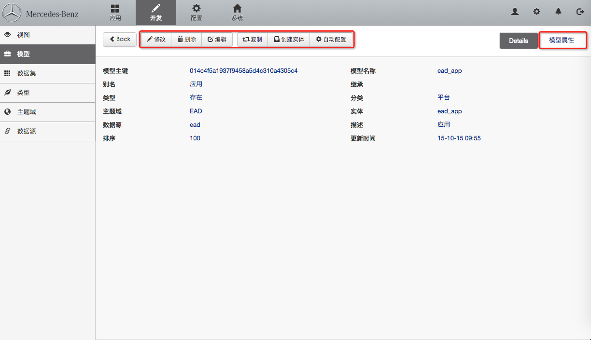
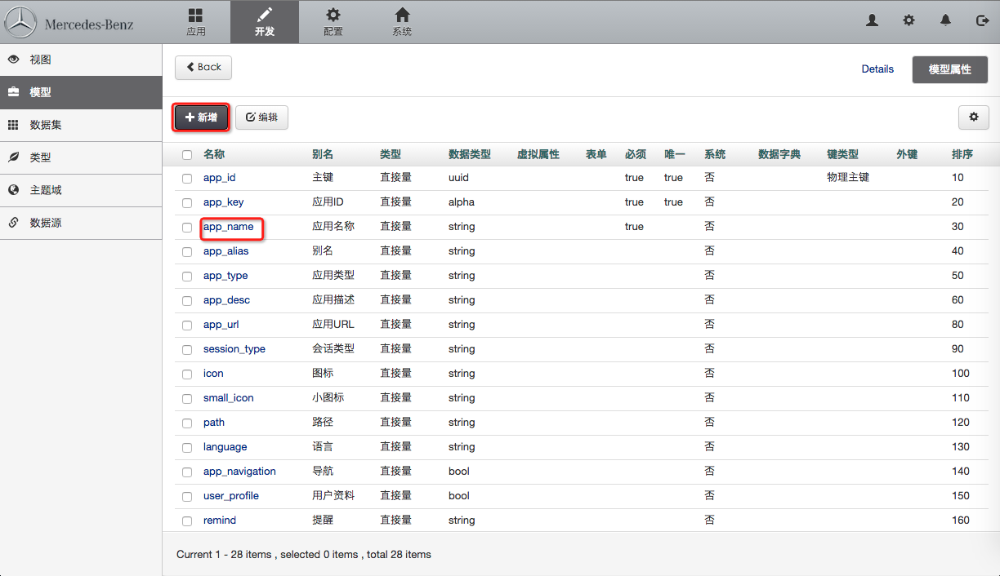

4.2 创建模型属性
菜单路径：开发 > 模型 > 模型属性
 
点击"新增"按钮开始添加新模型属性，或者选定已存在的模型属性进行“修改，删除”操作。

- 名称：模型属性名称，使用字母、数字、下划线组合
- 别名：模型属性的中文名称或英文名称（一般用于页面展示名称一致）
类型：模型属性类型
- 直接量
- 外键关系
- JSON对象
- JSON数据
- 单例模型
- 模型集合
- 链接
注意：其中,1~4 所对应的值都会从数据库实体中获取到，5~6 用于配置一对一、一对多（父子模型），7 用于配置链接地址
数据类型：用来表示所创建模型属性的数据类型，详细信息参照
开发 > 类型注意：除普通类型完，模型本身也可以作为数据类型，当模型属性类型为单例模型或模型集合时，必须选择数据类型为模型。
枚举列表：当该属性的值需要从列表中进行选择时，需要设置枚举列表，设置方法如下：
第一种：工艺,设备,仪表,电气。 第二种：technology:工艺,equ:设备,instrument:仪表,electric:电气 注意：其中的分隔字符都为英文字符（半角字符）。
虚拟属性
- 是，在该模型对应的数据库实体中不创建，但在需要在视图上会进行展示。（一般为联合查询后的字段）
- 否，在该模型对应的数据库实体中会创建。
- 默认
注意：一般留空，或者当要进行数据联合展示时，选择是即可
表单：浏览器中操作时，展现的填写表单
- 必须：设置后，该属性在填报时必须填写
- 唯一：设置后，该属性在表单提交是进行唯一性校验
- 默认值：默认值填写后，表单中会自动出现该值
- 系统：是否系统自动填写字段，填写的值为设置的默认值
- 否，非系统自动填写
- 只创建，创建时系统自动填写，如创建时间。
- 只更新，更新是系统自动填写
- 可写，创建和更新时系统填写
- 数据字典：该属性的值是从其他表中选择得到的，此处选择一个字典视图。
- 键类型：分为物理主键和联合主键
- 物理主键，一个模型有且仅有一个物理主键
- 联合主键，一般用户联合唯一性校验
- 外键：当前属性类型为单例模型或模型集合时，需要指定当前模型的那一个属性与数据类型中选择的模型所关联。